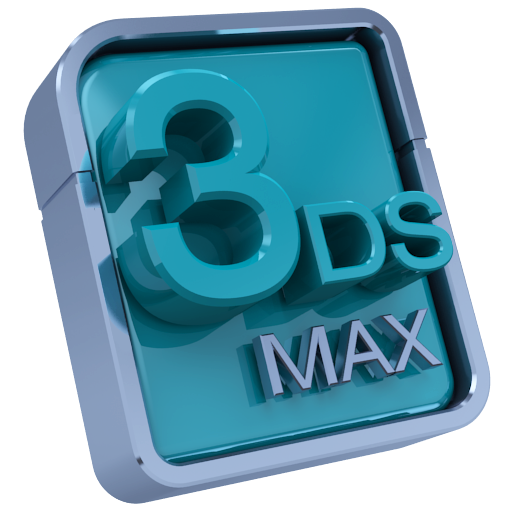

Hello, I'm
John Shields.
Welcome to my Portfolio!
.jpg)
Hello, I'm
Welcome to my Portfolio!
I have recently finished a MSc in Serious Games and Virtual Reality at
The Glasgow School of Art
where I am currently based.
This course is the beginning of my professional education as it specialises me into the world of Game
Development with close ties to Visual Effects.
I am a graduate from a Bachelor of Science (Honours) in Software Development at
The Galway-Mayo Institute of Technology (GMIT). This course focused heavily on practical
software
development
with
real-world application and trained me to be a Full-Stack developer.
I enjoy developing user-friendly applications that are useful for everyday tasks.
Over the past year, Game Development has become one of my passions and I love every aspect of it.
When I am working on games, I can see how much my creative side flows and my skills keep improving with
every game I develop.
When I am not programming, I enjoy video editing, studying films and creating music.
When I need to cool off, I go surfing!
These are some technologies and tools I like using!
 |
 |
 |
 |
 |
|---|---|---|---|---|
 |
 |
 |  |
 |
A collection of my active and non-active projects for university and personal interest.
Click on the images to learn more and see the projects for yourself!

The Celestial Beyonds mixes Space Hub Exploration, Platformers, Action and Bees in one game! However, it is my Masters Dissertation and the research and delivery focuses on A.I. companionship in Serious Games.

A VFX re-creation of the burning spitfire scene in the film directed by Christopher Nolan, Dunkirk (2017) in 3ds Max.
Auldearn, a medieval boss battle developed using the Unity Game Engine, C# and 3Ds Max.

Mixed Reality Game that allows the user to control the game using voice commands, keyboard, and mouse.
JavaFX Game that uses the AI technologies; Fuzzy Logic and Neural Networks to enhance the experience and to control a set of characters moving randomly through a game model.
My Undergrad Final Year Project. Repota is a CRUD App that works with a RESTful API. It is designed for automobile technicians to fill out service reports for auto dealerships and rental companies.
JavaFX App that processes JAR Files to read the embedded Classes and print their Class Names, Package Names, and Lines of Code on a GUI. This app was developed with heavy use of OOP and uses various Design Patterns.
A Flask Web Service that uses Machine Learning to make predictions based of a Power Production of a Wind Turbine Data Set.
A Python program to build Non-Deterministic Finite Automatons from Regular Expressions using Thompson’s construction.

A Kafka Distributed Banking System that processes card transactions and identifies suspicious transactions so that customers can be notified.
Noir Town is a Web App for fans of jazz. With this app, they can sort and search tunes, contribute to the database by adding, editing, removing tunes, obverse artist's work and listen to previews until their hearts are content.